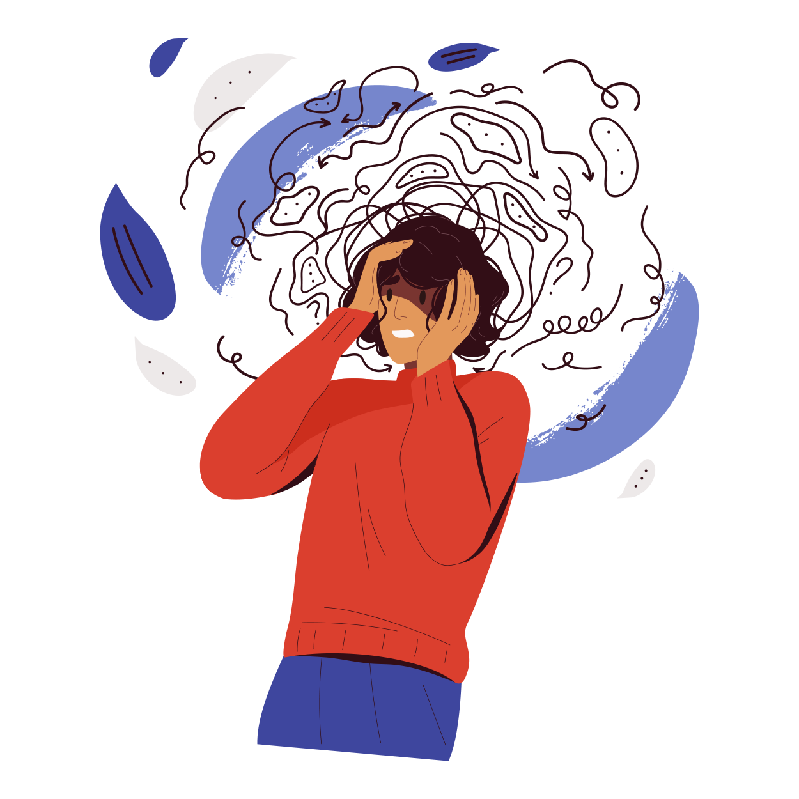
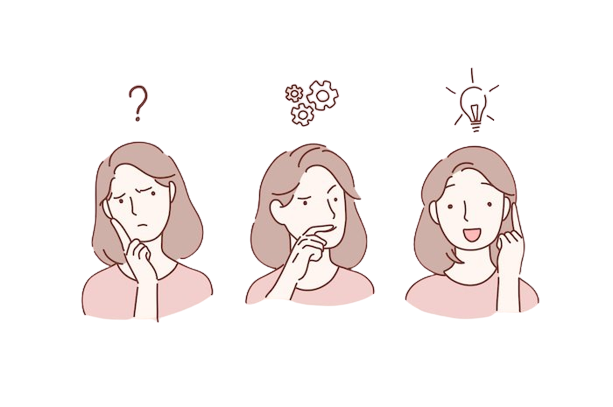
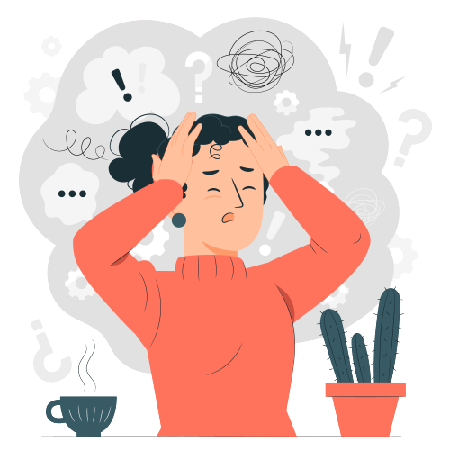

Síntomas de la ansiedad
Los diferentes tipos de trastornos de ansiedad pueden tener síntomas diferentes.
Pero todos muestran una combinación de:

- Sensación de nerviosismo, agitación o tensión
- Sensasion de peligro inminente, pánico o catástrofe
- Aumento del ritmo cardíaco
- Respiración acelerada(hiperventilación)
- Sudoración
- Problemas para concentrarse o para pensar en otra cosa que no sea la preocupación actual
- Tener problemas para conciliar el sueño
- Padecer problmeas gastrointestinales
- Tener la necesidad de evitar las situaciones que generan ansiedad
- Cansarse fácilmente o sentirse cansados todo el tiempo
- Tener temblores o tics(movimientos nervios de punta)

El uso de cafeína, otras sustancias y ciertos medicamentos pueden empeorar sus síntomas
A menudo los niños y adolescenete con el trastorno de ansiedad generalizada se preocupan excesivamente por:
- Su rendimiento, como en la escuela o los deportes
- Eventos catastróficos, como terremotos o guerras
- La salud de otros, como la de los miembros de la familia
A menudo los adultos con este trastorno se ponen sumamente nerviosos por situaciones diarias como:
- La seguridad laboral o rendimiento en el trabajo
- La salud
- Las finanzas
- La salud y el bienestar de sus hijos y de otros familiares
- Atrasarse
- Completar las tareas del hogar y cumplir con otras responsabilidades